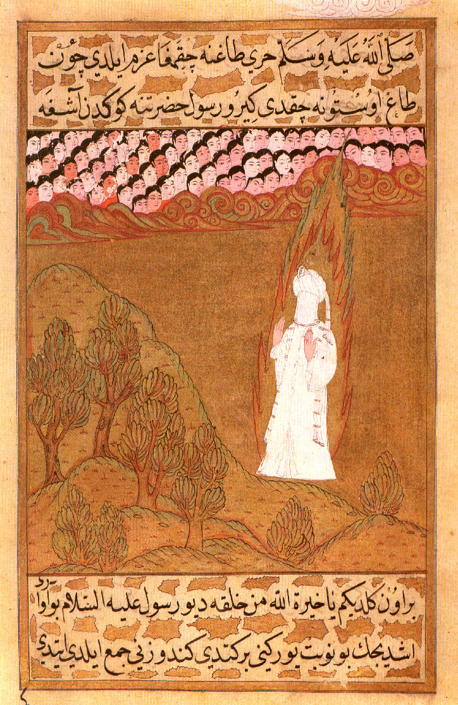
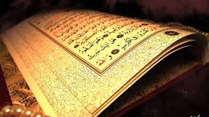
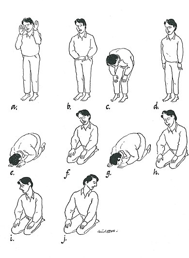
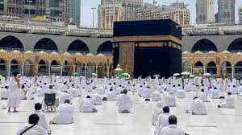
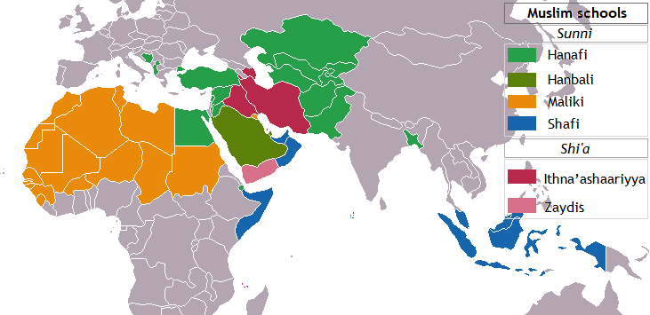
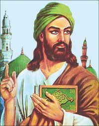
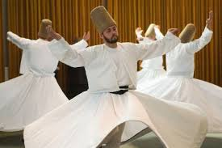

Introductie in de islam
De islam is een monotheïstische godsdienst en een van de drie grote(re) zogenoemde abrahamitische religies. Het Arabische woord islam betekent letterlijk overgave of onderwerping en wijst op het fundamentele, religieuze principe dat een aanhanger van de islam (moslim) zich overgeeft aan de wil en wetten van God. De tekst van de Koran (een van de Islamitische heilige boeken) is volgens de islam doorgegeven aan Mohammed als profeet en boodschapper via de aartsengel Djibriel (Gabriël). Naast de Koran is de soenna van Mohammed, waarin de levenswijze, de gezegden en de standpunten van de profeet worden beschreven, ook een belangrijke bron voor de (soennitische) islamitische doctrine. Elke islamitische stroming kent haar eigen bronnen voor de soenna. Moslims kunnen het woord moslim in een bredere betekenis gebruiken, namelijk - zoals hierboven vermeld - iemand die zich aan God (Allah) overgeeft. Volgens deze definitie waren bijvoorbeeld Adam, Ibrahim (Abraham) en Isa (Jezus) moslims. Op basis van de Koran worden zij een ḥanīf genoemd (onder andere soera De Koe 135-136), een voor-islamitische monotheïst en Godzoeker.
De oorsprong
Traditionele visie
Volgens de islamitische traditie wordt Mohammed (570-632) gezien als de laatste in een reeks van profeten. Tijdens de laatste tweeëntwintig jaar van zijn leven, vanaf zijn veertigste, zou Mohammed openbaringen hebben gekregen van God die aan hem werden doorgegeven door de aartsengel Gabriël waarin hij werd opgeroepen het geloof van Adam en Abraham opnieuw te introduceren. Voor moslims is de islam dan ook de oorspronkelijke religie zoals geopenbaard aan Abraham, Musa (Mozes), Isa (Jezus) en andere islamitische profeten. De boodschappen in deze openbaringen, bekend als de Koran, werden gememoriseerd en opgeschreven door zijn volgelingen. In totaal noemt de Koran 25 profeten, maar Mohammed wordt in de islam doorgaans beschouwd als de laatste profeet, "Zegel der Profeten", die de geschiedenis van de doorlopende openbaring van Gods wil heeft afgesloten. De islam is voor moslims de vervolmaking van de monotheïstische religie van God. Gedurende de periode dat Mohammed in Mekka predikte, drong hij er hen op aan om te stoppen met hun polytheïsme en slechts één God te aanbidden. Hoewel sommigen zich bekeerden tot de islam, werden Mohammed en zijn volgelingen vervolgd door het stadsbestuur. Na twaalf jaar van vervolging van de moslims onder Mohammed door de Mekkanen vertrokken de eersten naar de stad Medina (de zogenaamde Hijra) waar ze een islamitisch bestuur vestigen. Daar werd de eerste islamitische umma (gemeenschap)opgericht door Mohammed. Die gemeenschap was niet alleen religieus maar was ook politiek. De Mekkanen blijven echter in conflict met de moslims en deze situatie eindigt pas wanneer Mohammed in 629 Mekka gewapenderhand verovert. Wanneer hij in 632 op tweeënzestigjarige leeftijd sterft heeft hij de Arabische stammen van Arabië zowel politiek als religieus verenigd.
Historisch-wetenschappelijke visie
De moderne wetenschappelijke geschiedschrijving probeert het verleden te reconstrueren door gebruik te maken van op betrouwbaarheid getoetste archeologische vondsten en tekstkritisch getoetste schriftelijke bronnen. Hoewel een meerderheid van historici aanneemt dat Mohammed een historische persoon is geweest, kan door het ontbreken van betrouwbare bronnen uit eerst hand, de historiciteit van Mohammed niet worden vastgesteld. De vroegst bekende biografie van Mohammed, werd honderdtwintig jaar na de dood van Mohammed geschreven door Ibn Ishaak. Deze biografie met de naam 'Het leven van Gods boodschapper' is niet overgeleverd en enkel bewaard in een bewerkte versie door een latere auteur genaamd Ibn Hisham en dateert uit de 9e eeuw. De traditionele overlevering, waarbij de Koran door Mohammed werd ontvangen en door hem en zijn naaste metgezellen werd gememoriseerd om kort na Mohammeds dood schriftelijk te worden vastgelegd, kan eveneens niet door een wetenschappelijke benadering bevestigd worden. De oudst bekende fragmenten van de Koran (of een voorloper) zijn in 1972 ontdekt in Jemen. Door middel van koolstofdatering wordt de oorsprong van de oudste van deze tekstfragmenten tussen 645 en 690 geschat. Echter, omdat bij koolstofdatering wordt uitgegaan van het jaar waarin een organisme is gestorven dat in het geval van perkament niet hoeft overeen te komen met de opgeschreven tekst gaan wetenschappers op basis van de kalligrafie uit van een werkelijke datering van tussen 710-715. De oudste bekende volledige Koran, de zogenaamde Samarkand Koran, stamt naar alle waarschijnlijkheid uit het einde van de 8e tot het begin van de 9e eeuw. De Koran verwijst veelvuldig naar thema's en verhalen over personen die eerder in de Thora/Oude Testament en het Nieuwe Testament zijn beschreven. Dit betreft onder andere Mozes, Maria en Jezus. Niet alle verhalen over deze figuren in de Koran komen overeen met deze eerder genoemde geschriften. Zo spreekt de Koran tegen dat Jezus aan een kruis stierf en opstond, en was volgens de Hadith niet Isaak de "zoon van de belofte", maar juist Ismaël, de stamvader van de Arabieren. Desalniettemin, zijn de overeenkomsten dusdanig dat de wetenschappelijke consensus is dat de Koran veel aan deze eerdere teksten heeft ontleend. De traditioneel islamitische verklaring voor deze overeenkomsten is dat zowel de geschriften van de christenen en joden onvolledige en verstoorde versies van de islam zijn. Naast joods-christelijke elementen bevat islam waarschijnlijk ook verscheidene heidense tradities uit voorislamitische animistische religies in de islam geïntegreerd, zoals het heiligdom de Kaäba en de rondgangen die daaromheen gemaakt worden tijdens de oemra en de hadj (tawaaf), elementen die volgens de islamitische traditie op Abraham teruggevoerd moeten worden.
Heilig geschriften
De Koran
De Koran is het enige van de door moslims erkende islamitische heilige boeken dat zuiver zou zijn overgeleverd. Volgens de islamitische traditie zijn de woorden in de Arabische taal door God via de engel Djibriel aan de profeet Mohammed geopenbaard. De Koran wordt beschouwd als het eerste prozawerk uit de Arabische literatuur en heeft een grote invloed gehad op de literaire ontwikkeling van het Arabisch. Het Arabische woord قرآن (qoer'ān) betekent oplezing, recitatie, voordracht. Koran wordt gebruikt voor de Nederlandse vertaling. Een vertaling wordt door moslims doorgaans niet als authentiek gezien, omdat vertalen automatisch interpreteren zou betekenen. Iedere vertaling is dus 'slechts' een interpretatie. Vertalingen vertonen, door de opbouw van de Arabische taal, op essentiële punten grote verschillen en worden dan ook niet als gezaghebbend erkend. Exegese op de Arabische Koran is wel mogelijk en wordt tafsir genoemd. De bekendste islamitische geleerden (oelama) spreken daarom over een 'exegetische vertaling'. De Koran is de eerste bron van de islam, maar de Overleveringen (Hadith) zijn de tweede bron. De Koran geeft geen specifieke antwoorden op elke vraag of elk probleem. Mohammed en zijn metgezellen worden gezien als de levende uitleggers in praktijk, vastgelegd in de Overleveringen. De Koran en de (minder absolute) Hadith samen vormen de basis van de islam. Voor moslims is de autoriteit van de Koran absoluut. Het wordt gezien als het Woord van God. De Koran wordt echter wel geïnterpreteerd. Dit kan een dynamische interpretatie zijn die met de omstandigheden verandert.
De Hadith
De Hadith zijn de in grote verzamelingen vastgelegde, islamitische overleveringen over het doen en laten en de uitspraken van Mohammed. Via deze overleveringen kent men de soenna, de manier (weg) van de profeet. Voor de overgrote meerderheid van de moslims vormen de Hadith een aanvulling op en interpretatie van de Koran. De Hadith is de in de 8e en 9e eeuw neergeschreven orale traditie. Het is een in het Arabisch gebruikt islamitisch woord. Een hadith bestaat uit twee delen:
- Isnad: de keten van personen die de uitspraak hebben doorgegeven. Dit is belangrijke informatie, omdat de waarde en de betrouwbaarheid van hetgeen er doorverteld wordt, sterk afhangt van de oorsprong van de informatie.
- Matn: de eigenlijke inhoud van de uitspraak.
Uit de Koran en de Hadith werden islamitische wetten samengesteld, de sharia. In de meeste islamitische landen geldt de sharia als basis van een deel van het recht. De meeste islamitische landen hebben overigens een gemengd rechtssysteem. De Hadith geniet geen absoluut gezag en is geen primaire bron, omdat ze bestaat uit mondelinge overleveringen die later werden opgetekend. Alle stromingen in de islam kennen eigen bronnen van Hadith-verzamelingen. Waar de soennieten bijvoorbeeld Al-Bukhari en Muslim als authentiek en betrouwbaar beschouwen, zien sjiitische stromingen de Kitab al-Kafi als hun voornaamste bron van Hadith, die vooral door metgezellen van de Twaalf Imams zijn overgeleverd. Aanhangers van het koranisme menen dat Hadith-verzamelingen te veel tegenstrijdigheden met zichzelf en met de Koran hebben. Bovendien zou de Koran zeer negatief zijn over het volgen van Hadith. De Koran wordt beschouwd als de beste Hadith. Ook in de sjiitische Kitab al-Kafi wordt vooraf gezegd dat het onjuist is om een Hadith authentiek te noemen, omdat de overleveraars mensen zijn en niet onfeilbaar en omdat elke Hadith 'afgewogen' dient te worden met de Koran. Volgens koranisten, of 'Quran alone' moslims, zou de Koran het volgen van Hadith veroordelen (in bijvoorbeeld verzen 6:114, 31:6, 45:6 en 77:50) en ook het vertrouwen op bronnen buiten de Koran.
Het gebed
De salat of salah is het rituele gebed binnen de islam. Het is een van de vijf zuilen van de islam en dus verplicht. Moslims zijn verplicht vijf keer per dag de salat te verrichten, volgens een Hadith door God aan Mohammed gegeven tijdens de Nachtreis. De Koran schrijft de salat voor aan de gelovigen in verschillende ayaat. Daarnaast wordt de salat 21 keer genoemd in combinatie met de zakat. Vóór elke salat moet een moslim zich ritueel wassen, dit heet woedoe. Salat komt niet geheel overeen met de westerse betekenis van het woord gebed. De salat is bedoeld om God te eren en te danken. Volgens de Koran was de salat al eerder voorgeschreven aan de joden (soera De Koe 43, 83, soera De Tafel 12 en soera Jonas 87), aan de profeten Musa (soera Ta Ha 14) en Isa (soera Maria 31), maar de latere geslachten lieten de salat verloren gaan (soera Maria 59). Ook Ibrahim vraagt zijn nakomelingen in soera Abraham 37 de salat te verrichten.
Gebedstijden
Volgens de Koran dient de salat verricht te worden op de twee einden van de dag (soera Hud 114, soera De Donder 15, soera Ta Ha 130) en bij het ondergaan van de zon en de dageraad (soera De Nachtreis 78. Soera De Koe 238 roept op de salats in acht te nemen en de middelste. De namen van de vijf dagelijkse gebeden (en tevens van de tijdstippen) zijn:
- Fajr (dageraad)
- Dhuhr (middag, net na het hoogste punt van de zon)
- Asr (namiddag)
- Maghrib (zonsondergang of avond)
- Isha (nacht)
Volgorde van het gebed
De salat heeft een bepaalde volgorde. Kleine handelingen verschillen per madhhab, maar deze verschillen zijn niet noemenswaardig. Slechts een geoefend oog merkt deze verschillen op. De salat wordt in het Arabisch verricht, hoewel in het begin voor bekeerlingen een uitzondering wordt gemaakt. Een weinig gedetailleerde volgorde van handelingen is als volgt:
- Intentie (welk gebed wordt verricht en uit hoeveel raka'at bestaat het)
- Takbier (men heft de handen en zegt: Allahoe akbar, God is de grootste)
- Openingssmeekbede
Dan volgt een raka'ah. Een raka'ah bestaat uit:
- Recitatie van soera De Opening
- Recitatie van een aantal andere ayat of een andere soera, bijvoorbeeld soera De Mensheid
- Buigen (rukoo' genaamd)
- Rechtop staan na het buigen
- Nederwerping (sudjud genaamd, men raakt de grond met de handpalmen, de knieën, de voeten en het gezicht; neus en voorhoofd)
- Omhoog komen vanuit de nederwerping
- De tweede nederwerping
Men gaat staan en verricht:
- De tweede raka'ah
- De eerste tashahhud (hier getuigt men onder andere dat er geen god dan God is en Mohammed zijn Profeet, de shahadah)
Hierna verricht men zo nodig de derde en zo nodig ook de vierde raka'ah
- De tweede tashahhud (hierin vraagt men God genade, zegeningen en eer aan Mohammed, zijn familie en zijn volgelingen te geven)
- Het groeten (tasliem genaamd, men groet de engelen rechts en links naast zich met de woorden As-salaamoe 'alaykum wa rahmatoe Allaah, wat betekent Vrede zij met jou en de genade van God)
De vijf zuilen van de islam
De sjahada
De sjahada is de islamitische getuigenis (geloofsbelijdenis) en een van de vijf zuilen van de islam. Hij staat in nauw verband met de Zuilen van geloof. De essentie van een geloof wordt samengevat in een korte, op het oog eenvoudige verklaring, die echter diverse diepere betekenissen in zich bergt. In de islam is dit de geloofsbelijdenis, Sjahada.
De Arabische tekst is als volgt:
أَشْـهَدُ أَنْ لا إِلـهَ إِلاّ الله ، وَأَشْـهَدُ أَنَّ مُحَمّـداً رَسـولُ الله
Nederlandse vertaling: Ik getuig dat (er) geen godheid is (dan) alleen God en ik getuig dat Mohammed de gezant van God is."
De sjahada kan grotendeels worden gebaseerd op een tweetal Koranpassages, te weten soera De in de Rangen Behorenden 35 ("... Er is geen God naast God") en soera De Toewijding 1 ("God is de Enige"). De samenstelling lijkt gevormd naar het joodse sjema ("Hoor Israël, de Heer (is) onze God, de Heer is één"), maar verschilt ervan in ten minste twee opzichten: de sjahada begint met een ontkenning ("er is geen godheid dan Allah") en noemt in één adem een mens (Mohammed). De sjahada legt bovendien wel een relatie tussen God en Mohammed, maar niet met de gelovigen zoals het sjema doet ("onze God").
De Salat
zie hier voor meer informatie over de salat
Zakat
Zakat is een van de vijf zuilen van de islam. Het woord zakat betekent 'reiniging' in de vorm van verplichte aalmoezen aan de armen om tot een rechtvaardiger verdeling van goederen te komen. Betaling ervan 'reinigt' het overige bezit en vermogen en dient als boetedoening voor de zonden. Daarmee zal de gever verre gehouden worden van het hellevuur. Er zijn strenge regels voor het bepalen van de hoogte van de zakat. Het betalen van zakat is verplicht indien het bezit minus schulden een bepaald bedrag overschrijdt. Dit bedrag is het equivalent van 85 gram puur goud. De te betalen zakat hangt af van de stroming van islam welke men aanhangt. Volgens sommige islamitische stromingen bedraagt de zakat 2.5% van het bezit. Op het internet zijn sites met zakat-calculators te vinden. Zakat in de islam is van het allergrootste belang omdat het dient om voor elkaar te zorgen. Moslims over de hele wereld geven zakaat met behulp van een zakat-rekenmachine die moslims kan helpen bepalen wat de zakaat is op hun eigendom, salaris, goud zijn enkele van de items waarop zakaat wordt gegeven. De zakat kan dienen om de armen te helpen, maar, volgens sommige stromingen, ook om de zaak van de islam te bevorderen, zoals het bouwen van een moskee. Eventueel kan een hoger bedrag worden weggeschonken voor islamitische liefdadigheidsdoeleinden (sadaqah), om daarmee een grotere hemelse beloning te verkrijgen.
Hadj
De hadj is de pelgrimstocht naar Mekka, een van de vijf zuilen van de islam. De hadj is verplicht voor alle gezonde, volwassen moslims die over voldoende geld beschikken. Voor mensen die om gezondheidsredenen niet kunnen gaan, of niet genoeg geld hebben, is het dus geen verplichting. Wel kan iemand die zelf de hadj al verricht heeft, in naam van iemand gaan die daartoe niet in staat is, ook namens een overledene. In 2015 namen naar schatting 2 miljoen mensen deel aan de hadj.
Saum
Het vasten wordt sawm (saum) of siyam genoemd. Dit houdt in dat veel moslims op deze tijden niet eten, drinken, roken en dat ze zich onthouden van geslachtsgemeenschap. Daarnaast zijn ook liegen, schelden, kwaadspreken en vloeken tijdens de ramadan extra kwalijk.
stromingen in de islam
Binnen de islam zijn er verschillende stromingen. De twee grootste stromingen zijn ontstaan ten gevolge van een conflict over de opvolging van Mohammed. De islam kent hierdoor geen centraal leergezag en er is ook geen religieus-spiritueel leider, zoals de paus in de Rooms-Katholieke Kerk, wiens gezag door rooms-katholieke christenen algemeen erkend wordt. Circa 90% van alle moslims, ook die in het Westen leven, is soennitisch. De andere stromingen zijn het sjiisme, beleden in Iran, Irak, Azerbeidzjan, enz. en het ibadisme, beleden in Oman. De oemma is de wereldwijde islamitische gemeenschap.
Het soennisme
is de stroming binnen de islam met de meeste aanhangers en het grootste verspreidingsgebied. Het soennisme is verdeeld in verschillende madhahib (rechtsscholen), die zonder noemenswaardige onderlinge conflicten naast elkaar bestaan. Het soennisme is evenals het sjiisme ontstaan uit de strijd om de rechtmatige opvolging van Mohammed, die begon na zijn dood in het jaar 632. De soennieten gaan ervan uit dat Mohammed tijdens zijn leven geen opvolger heeft aangeduid, en ook niet heeft aangegeven hoe een opvolger bepaald moest worden. De strijd ging tussen aanhangers van Mohammeds neef en schoonzoon Ali en die van de kaliefen. De soennieten zijn volgelingen van de laatsten. De eerste kalief was Mohammeds schoonvader Aboe Bakr. Na de eerste vier gekozen kaliefen was het grote schisma binnen de islam een feit en kwam het kalifaat in handen van opeenvolgende soennitische dynastieën, de Omajjaden en de Abbassiden. Hun invloed strekte zich via veroveringsoorlogen binnen enkele generaties uit van Spanje (de Pyreneeën) tot aan de Punjab in oostelijk India. Het soennisme krijgt veel kritiek van aanhangers van andere islamitische stromingen en van buitenaf, omdat het qua praktisering, hadith-keuze en leer te veel beïnvloed zou zijn door de Omajjaden. De Soenna zoals vastgelegd in de 6 Hadith-verzamelingen wordt geïnterpreteerd door juristen van 4 Soenni madhabs, scholen van jurisprudentie: Hanafi, Hanbali, Maliki en Shafi'i, en vormen naast de koran als primaire bron voor de regels van de islamitische wet, de Sharia, die praktisch ieder aspect van het leven, van persoonlijke hygiëne tot macro-economie, bestrijkt.
Sjiisme
is een van de twee grote ideologische stromingen binnen de islam waarvan de andere het. Sji'a is een korte vorm van sji'at Ali wat staat voor de Partij van Ali. Sjiisme komt vooral voor in Iran, waar de geschriften van het sjiisme grotendeels de wetten vormen, maar ook in Azerbeidzjan, Bahrein, Turkije en Irak. Tevens vormen sjiieten een substantiële minderheid in Pakistan, Libanon, Jemen, Syrië, Afghanistan en diverse Golfstaten. Sjiieten of shi'a zijn volgelingen van de islamitische profeet Mohammed. Zij geloven dat Mohammed zelf Ali ibn Aboe Talib (Mohammeds neef; getrouwd met zijn dochter Fatima) als zijn opvolger aanwees. In het sjiisme staat de religieuze en politieke opvolging van Mohammed over de Hidjaz, het Arabisch Schiereiland en later Perzië centraal. Sjiieten baseren het volgen van Ali op verschillende overleveringen (Hadith) over Mohammed en zijn uitleg van bepaalde ayat uit de Koran. De sjiieten verwerpen de eerste drie kaliefen van het soennisme als politieke en religieuze leiders (Aboe Bakr ; Omar I en Oethman ibn Affan) en zien hen als usurpators. De twee stromingen werden pas definitief gescheiden nadat imam Hoessein – Mohammeds kleinzoon – in 680 in Kerbala (in Irak) met meerdere van zijn familieleden werd onthoofd door de generaals van Yazid I, de toenmalige heerser en zoon van Moe'awija I. Hiernaar wordt door de sjiieten verwezen als "de tragedie van Kerbala" en het martelaarschap van Hussain, die jaarlijks wereldwijd wordt herdacht middels bijeenkomsten waarin lering wordt getrokken uit het verhaal en idealen van Hussain.
Soefisme
Het soefisme is een mystieke, spirituele beweging binnen zowel het soennisme als het sjiisme. Het soefisme wordt ook aangeduid als de volksislam. Het wordt ook wel tasawwoef genoemd en beschreven als het hart van de islam. Soefisme vormt een innerlijke, mystieke of de psycho-spirituele dimensie binnen de islam. Het voeren van een innerlijke strijd en het ontwikkelen van zelfdiscipline zijn belangrijke kenmerken van een soefistische levenshouding. Door het doen van spirituele, meditatieve oefeningen, meestal onder leiding van een spirituele meester, hoopt men 'dichter bij God' te komen. De meningen van islamitische geleerden over het ontstaan van het woord soefisme zijn verdeeld. Sommigen zien een relatie met het Griekse woord 'sophia', wat levenswijsheid betekent, anderen zeggen dat het verwijst naar arme moslims die naast de moskee van de Profeet in Medina op een bank (soefa) zaten. Ook bestaat de opvatting dat de benaming afkomstig is van het Perzische woord voor wol, aangezien veel soefi's eenvoudige wollen kleding droegen die paste bij hun sobere levensstijl.